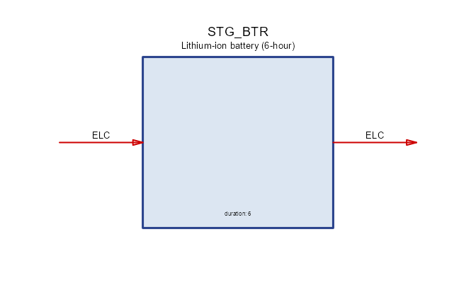
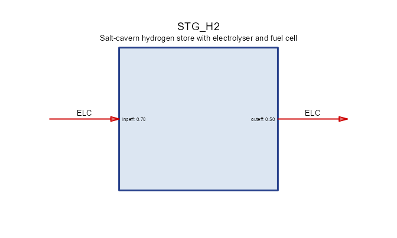
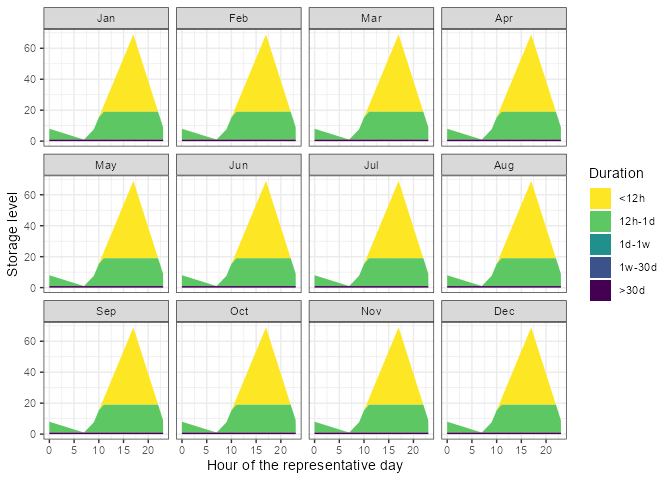
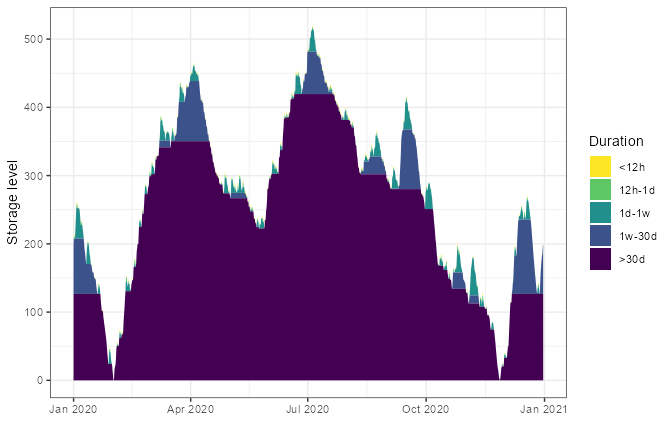

What a storage is
Every other process in energyRt turns a flow into another flow
now. A storage is the only one that moves energy
between timeslices: it holds a level, and the level
carries across the calendar.
That gives it three separate physical things, which for a long time energyRt squeezed into one:
| what it is | unit | slot | |
|---|---|---|---|
| charger | how fast it can fill | power | @input |
| reservoir | how much it can hold | energy | @storage |
| discharger | how fast it can empty | power | @output |
A battery is an inverter plus a stack of cells. A pumped-hydro plant is a pump, a reservoir and a turbine. An electric car is a charge point, a battery and a motor. In each case the three are sized — and priced — separately, and the interesting modelling questions are about the ratios between them.
Declare the commodity first, with its unit, then the process:
ELC <- newCommodity(
name = "ELC",
desc = "Electricity",
unit = "MWh",
timeframe = "HOUR"
)
STG_BTR <- newStorage(
name = "STG_BTR",
desc = "Lithium-ion battery (6-hour)",
commodity = "ELC",
output = list(
comm = "ELC",
unit = "MWh",
invcost = 12144 # EUR/MW -- the inverter
),
storage = list(
comm = "ELC",
unit = "MWh",
invcost = 8081 # EUR/MWh -- the cells
),
duration = 6, # a 6-hour battery
vintage = data.frame(olife = 15L)
)
draw(STG_BTR)
commodity = "ELC" is shorthand: it fills all three roles
at once. There is no @commodity slot — the argument is
folded into @input, @storage and
@output when the object is built, so a storage never
carries two answers to “what does it consume”. Naming a role explicitly,
as @output and @storage are named above,
overrides the shorthand for that role only.
unit is descriptive: it is the unit of the
commodity on that side, carried for reporting and
convert(), and never reaches the solver. Capacity units are
not declared — they follow from cap2act, which is why the
storing side has none.
The three commodities need not be the same
This is the part that changes what you can model.
@storage$comm is what the store holds;
@input$comm and @output$comm are what it
exchanges. When all three coincide you have a battery. When
they do not:
H2 <- newCommodity(
name = "H2",
desc = "Hydrogen",
unit = "MWh",
timeframe = "HOUR"
)
STG_H2 <- newStorage(
name = "STG_H2",
desc = "Salt-cavern hydrogen store with electrolyser and fuel cell",
commodity = "H2", # what it HOLDS
input = list(
comm = "ELC", # electrolyser
unit = "MWh",
invcost = 226174
),
output = list(
comm = "ELC", # fuel cell
unit = "MWh"
),
storage = list(
comm = "H2", # the cavern
unit = "MWh",
invcost = 112
),
seff = data.frame(
inpeff = 0.70,
outeff = 0.50
),
vintage = data.frame(olife = 25L)
)
draw(STG_H2)
@seff$inpeff and $outeff are
cross-commodity conversion factors here — input→stored
and stored→output — the same role cinp2use plays for a
technology. When the three commodities coincide they are the round-trip
efficiencies they have always been, and nothing changes.
Before this, the same system needed an electrolyser, a store, a fuel
cell, and an artificial H2 commodity whose only job was to
join them. On a two-day test model the fused object reproduces the
decomposition’s objective exactly (193.142857 on GLPK,
Julia/HiGHS, Pyomo and GAMS alike) in 149 variables and 151 constraints
instead of 251 and 257.
The saving is structural rather than clever: the artificial commodity’s balance rows disappear along with the two technologies.
An electric car is the case where this really bites. ELC
is shared with the grid, so a composed model needs an artificial
on-board commodity to stop the motor drawing from the mains while
driving. Disjoint availability profiles do not save you — the profile
sits on the technology, not on the commodity.
The whole object at a glance
Everything a storage can carry, and where the rest of
this article covers it.
| slot | what it holds | section |
|---|---|---|
@name, @desc
|
identity | above |
@input, @output,
@storage
|
the three parts: commodity, unit, capacity, cost | above, and Sizing the parts |
@duration, @inp2out
|
ratios tying the parts together | Sizing the parts |
@fullYear |
where the cycle closes | @fullYear |
@startLevel |
endowment at the start of a cycle | @startLevel |
@seff |
storing / charging / discharging efficiency | The three commodities, Losses |
@af |
availability of the level and of the two flows | Availability |
@capacity |
whole-object stock, bounds and retirement | Capacity, stock and retirement |
@invcost, @fixom, @varom
|
economics | Costs |
@aux, @aeff
|
auxiliary commodities | Auxiliary commodities |
@weather |
weather-driven availability | Weather |
@region |
where it may be built | Regions and variants |
@cluster, @vintage
|
variants of one object | Regions and variants |
@optimizeRetirement |
let the model retire early | Capacity, stock and retirement |
@misc |
anything else, untouched | — |
@fullYear: where the cycle closes
The single most consequential flag on a storage, and the easiest to get wrong.
-
fullYear = TRUE(the default) — one cycle over the whole year. Energy put in during April can come out in October. -
fullYear = FALSE— one cycle per parent timeframe. On a day/hour calendar every day is an independent loop and nothing crosses midnight.
Cheap generation is unavailable on the February day, and all demand falls there, so the store is the only cheap way to serve it — and only if energy may cross the boundary between the two days.
# A bundled calendar: one representative day per month, 24 hours each. Its
# timeslices are DATED (`d015_h00`), which the reporting tools below need.
cal <- calendars$d365_h24_subset_1day_per_month
slices <- unique(cal@timetable$timeslice)
jan <- grep("^d015_", slices, value = TRUE) # the January day
feb <- grep("^d046_", slices, value = TRUE) # the February day
COA <- newCommodity(
name = "COA",
desc = "Steam coal",
unit = "MWh",
timeframe = "ANNUAL"
)
SUP_COA <- newSupply(
name = "SUP_COA",
desc = "Coal supply",
commodity = "COA",
supply = data.frame(cost = 1)
)
ECOA <- newTechnology(
name = "ECOA",
desc = "Cheap coal plant, unavailable on the February day",
input = list(comm = "COA", unit = "MWh"),
output = list(comm = "ELC", unit = "MWh"),
invcost = data.frame(invcost = 10),
af = data.frame(timeslice = feb, af.up = 0), # off in February
vintage = data.frame(olife = 30L),
cap2act = 1
)
EPEAK <- newTechnology(
name = "EPEAK",
desc = "Expensive peaking plant, always available",
input = list(comm = "COA", unit = "MWh"),
output = list(comm = "ELC", unit = "MWh"),
invcost = data.frame(invcost = 5000),
vintage = data.frame(olife = 30L),
cap2act = 1
)
STG_YEAR <- newStorage(
name = "STG_YEAR",
desc = "Electricity store, one cycle over the whole year",
commodity = "ELC",
invcost = list(invcost = 1),
vintage = data.frame(olife = 30L),
fullYear = TRUE
)
STG_DAY <- newStorage(
name = "STG_DAY",
desc = "The same store, but cycling once per day",
commodity = "ELC",
invcost = list(invcost = 1),
vintage = data.frame(olife = 30L),
fullYear = FALSE
)
DEM_ELC <- newDemand(
name = "DEM_ELC",
desc = "Electricity demand, February day only",
commodity = "ELC",
demand = data.frame(timeslice = feb, demand = 10)
)The two stores are identical apart from @fullYear, so
each gets its own repository and model:
repo_year <- newRepository(
name = "repo_year",
COA, ELC, SUP_COA, ECOA, EPEAK, STG_YEAR, DEM_ELC
)
repo_day <- newRepository(
name = "repo_day",
COA, ELC, SUP_COA, ECOA, EPEAK, STG_DAY, DEM_ELC
)
mod_year <- newModel(
name = "fy_year",
desc = "Storage cycling over the year",
region = "R1",
horizon = newHorizon(2020),
discount = 0,
calendar = cal,
repo = repo_year
)
mod_day <- newModel(
name = "fy_day",
desc = "Storage cycling every day",
region = "R1",
horizon = newHorizon(2020),
discount = 0,
calendar = cal,
repo = repo_day
)
scen_year <- solve_model(mod_year, name = "fy_year")
#> Solver directory: scenarios/fy-year_d365-h24-subset-1day-per-month/script/glpk
#> Writing files: 0.33s
#> Starting GLPK
#> 0.17s
#> Reading solution: 0.08s
scen_day <- solve_model(mod_day, name = "fy_day")
#> Solver directory: scenarios/fy-day_d365-h24-subset-1day-per-month/script/glpk
#> Writing files: 0.3s
#> Starting GLPK
#> 0.14s
#> Reading solution: 0.06s
getData(scen_year, "vObjective", merge = TRUE)$value
#> [1] 9962.545
getData(scen_day, "vObjective", merge = TRUE)$value
#> [1] 14607300With the cycle closed inside each day the store cannot help at all and the model falls back on the expensive plant. The flag is not a detail.
@fullYear was inert before energyRt
v0.80 — every storage cycled within its parent timeframe whatever the
flag said, which made multi-day and seasonal storage silently
unrepresentable. It surfaced when a converted PyPSA-Eur battery came out
2.1x oversized and idle 6,624 hours of 8,760.
@startLevel: an endowment, once per cycle
@startLevel says how much is in the store at the
start of a cycle. It has no timeslice column on
purpose: the slice is derived from where the cycle closes, not chosen.
It is an annual quantity, so a store cycling daily
receives its share, not the whole thing 365 times over.
STG_HYD <- newStorage(
name = "STG_HYD",
desc = "Reservoir hydro with an inherited initial filling",
commodity = "ELC",
startLevel = data.frame(
region = "R1",
year = 2020L,
startLevel = 500
),
vintage = data.frame(olife = 60L)
)
STG_HYD@startLevel
#> vintage cluster region year startLevel
#> 1 <NA> <NA> R1 2020 500Sizing the parts
@duration and @inp2out are the two ratios
that tie the three parts together. Both are bounds, on
(storage, region, year):
duration = reservoir / discharger [hours]
inp2out = charger / discharger [dimensionless]duration = 6 fixes the ratio — a 6-hour battery. A range
lets the model choose:
STG_FLEX <- newStorage(
name = "STG_FLEX",
desc = "Battery whose energy-to-power ratio the model chooses",
commodity = "ELC",
output = list(comm = "ELC", unit = "MWh", invcost = 12),
storage = list(comm = "ELC", unit = "MWh", invcost = 8),
duration = data.frame(
duration.lo = 2,
duration.up = 8
),
vintage = data.frame(olife = 15L)
)
STG_FLEX@duration
#> vintage cluster region year duration duration.lo duration.up duration.fx
#> 1 <NA> <NA> <NA> NA NA 2 8 NAA one-sided range opens the other side: duration.up = 8
means “up to 8 hours” and does not quietly inherit a
lower bound of 1.
An optimised ratio only means something when the reservoir is priced — with energy free the model simply takes the longest duration allowed. Given a cost on both sides, and both sides binding, it lands strictly inside the range.
@inp2out works the same way for the charger. Leave it
out and the charger is sized with the discharger; give it a range and
asymmetric hardware — a fast charger with a slow fuel cell, or a pump
smaller than its turbine — becomes a decision rather than an
assumption.
Structure follows data
A part carrying only a commodity name gets no capacity
variable at all. Naming a commodity is metadata, not data; only
a stock, a bound or a price materialises vStorageInpCap /
vStorageStgCap. Everywhere else the ratio is inlined onto
vStorageOutCap, which is exactly the older, smaller
model.
That is why adding all of this moved nothing: a storage written the old way keeps one capacity variable and its previous LP, to the row.
| variable | side | unit |
|---|---|---|
vStorageInpCap |
charger | power |
vStorageStgCap |
reservoir | energy |
vStorageOutCap |
discharger | power |
vStorageCap no longer exists. It meant power,
and vStorageStgCap means energy — one syllable
apart. Rather than leave a name whose meaning had to be guessed, it was
renamed vStorageOutCap, so the old name resolves to nothing
instead of returning the wrong quantity. Use
getData(scen, "vStorageOutCap").
Rates and energy: cap2act
A charger is a rate — 7 kW is 7 kW whether you model the year in hours or in four-hour blocks. A reservoir is an amount — 60 kWh is 60 kWh either way. energyRt keeps flows as quantities within a timeslice, so the rate has to be converted at the bound:
vStorageInp[.,s] <= cinp.up * cap2act * vStorageInpCap * pTimesliceShare[s]cap2act is capacity → annual flow, exactly as on a
technology. It defaults to 8760, the hours
in a year, which makes a capacity read as commodity per hour on
any calendar:
| calendar | share per slice | 8760 × share |
|---|---|---|
| 8760 × 1 h | 1/8760 | 1 |
| 2190 × 4 h | 4/8760 | 4 |
| 365 × 1 d | 1/365 | 24 |
| 1 × annual | 1 | 8760 |
Write cap.fx = 7 and you get 7 per hour in every row of
that table. If your commodity is TWh against GW capacity rather than
GWh, use 8.76.
A calendar is a YEAR, so say which part of it you mean
cap2act only reads as “per hour” if a timeslice really
is an hour, and that is a property of the calendar, not
of the storage. Declare 24 timeslices as a whole year and each is 365
hours long, so cap.fx = 7 quietly means 0.019 per hour.
The fix is not to adjust cap2act — that just renames the
confusion. It is to say the calendar covers one day out of the
year:
YF <- 1 / 365
cal <- newCalendar(
timetable = make_timetable(
struct = list(ANNUAL = "ANNUAL", HOUR = hrs),
year_fraction = YF
),
year_fraction = YF,
name = "one_day"
)Each slice then has share = 1/8760 — a real hour — and
the timeslice weight comes out as 365, so costs annualise
as “this day, repeated all year”. The bundled representative-day
calendars work the same way, which is why their leaf share is 1/8760
rather than 1/288.
Before this, the bound carried no share factor, so a capacity meant
“commodity per timeslice”. The same
cap.fx = 7 allowed 7 per hour on a 24 × 1-hour calendar and
1.75 per hour on a 6 × 4-hour one — refine the resolution and every
store silently became weaker. vStorageStgCap is
deliberately not scaled: energy is energy.
This is also what makes duration honest. With the
discharger a per-hour rate and the reservoir an amount,
duration = vStorageStgCap / vStorageOutCap is an hour count
— so duration = 6 on a 10 MW discharger gives exactly 60
MWh.
PyPSA does the same thing from the other end
PyPSA’s state-of-charge equation is
soc[t] = (1-standing_loss)^eh · soc[t-1] + eff_store·eh·p_store − eh·p_dispatch/eff_dispatchwhere eh is elapsed hours. Its p_*
variables are rates, so no limit constraint is scaled
at all — neither p ≤ p_nom nor soc ≤ e_nom.
energyRt puts the conversion on the bound instead of in the variable;
the physics is identical. Note energyRt already agreed on the decay
term, which has always been
(pStorageStgEff)^(pTimesliceShare) — the same compounding
by elapsed time.
What aggregation still costs you
Making the rating resolution-independent does not make a coarse calendar adequate. Discharge in a slice is bounded by three things:
(1) out <= cout.up · cap2act · outCap · share[s]
(2) out / outeff <= level[s]
(3) level[s] <= af.up · stgCapFor a 6 h / 10 MW battery (60 MWh), only (1) changes with resolution:
| calendar | flow bound (1) | energy bound (2)+(3) | binds |
|---|---|---|---|
| hourly | 10 MWh | 60 MWh | flow |
| daily | 240 MWh | 60 MWh | energy |
| day/night | 43,800 MWh | 60 MWh | energy |
So on coarse slices the power rating goes slack and the store is governed by its energy capacity alone. Hence:
The power rating binds only when the timeslice is shorter than the storage’s discharge duration.
Worse, the cycle count collapses. N timeslices
allow at most ⌊N/2⌋ cycles, so on a day/night calendar a
6-hour battery can perform exactly one cycle a year —
60 MWh moved, against roughly 21,900 MWh for a store that really cycles
daily. On a single annual timeslice there is no dynamic at all: the
cyclic balance pairs the slice with itself and collapses to
inpeff·inp = out/outeff.
A store whose cycle is shorter than one timeslice is therefore understated, not approximated. Representing ~365 daily cycles needs on the order of 730 timeslices — sub-6-hourly resolution. That is a property of temporal aggregation, not something the units fix can recover.
Losses: @seff
@seff carries all three efficiencies, and they are
applied at different places in the level equation:
| column | applies to | meaning |
|---|---|---|
inpeff |
charging | fraction of the input that reaches the level |
outeff |
discharging | level drawn per unit delivered is 1/outeff
|
stgeff |
holding | retention per hour, compounded as stgeff^share
|
stgeff is the one to watch: it is a
rate, raised to the timeslice share, so
0.999 is a per-hour retention and not a per-timeslice one.
That is what keeps a self-discharge assumption stable when the calendar
is refined.
STG_BTR_LOSS <- newStorage(
name = "STG_BTR_LOSS",
desc = "Battery with round-trip and self-discharge losses",
commodity = "ELC",
duration = 6,
seff = data.frame(
inpeff = 0.95,
outeff = 0.95,
stgeff = 0.999
),
vintage = data.frame(olife = 15L)
)
STG_BTR_LOSS@seff
#> vintage cluster region year timeslice stgeff inpeff outeff
#> 1 <NA> <NA> <NA> NA <NA> 0.999 0.95 0.95Efficiencies may vary by region, year and
timeslice, so a store that ages or a cavern that leaks more
in summer is a matter of extra rows.
Availability: @af
@af bounds the level and the two flows as fractions of
their capacities. Three families share the slot:
| columns | bounds |
|---|---|
af.lo / af.up / af.fx
|
the level, against vStorageStgCap
|
cinp.lo / cinp.up /
cinp.fx
|
charging, against the charger |
cout.lo / cout.up /
cout.fx
|
discharging, against the discharger |
Each accepts region, year and
timeslice, so the bound can follow the calendar. A
reservoir kept above a minimum head, and a grid connection that may not
charge during the evening peak:
STG_RES <- newStorage(
name = "STG_RES",
desc = "Reservoir with a minimum head and a charging curfew",
commodity = "ELC",
storage = list(comm = "ELC", unit = "MWh", invcost = 40),
af = data.frame(
timeslice = c(NA, "d046_h18"),
af.lo = c(0.15, NA), # never draw below 15% full
cinp.up = c(NA, 0) # no charging in that slice
),
vintage = data.frame(olife = 40L)
)
STG_RES@af
#> vintage cluster region year timeslice af.lo af.up af.fx cinp.up cinp.fx
#> 1 <NA> <NA> <NA> NA <NA> 0.15 NA NA NA NA
#> 2 <NA> <NA> <NA> NA d046_h18 NA NA NA 0 NA
#> cinp.lo cout.up cout.fx cout.lo
#> 1 NA NA NA NA
#> 2 NA NA NA NANA in a key column means “every member of it”, so the
first row applies in every timeslice and the second only in the named
one. .fx overrides the matching
.lo/.up pair.
Capacity, stock and retirement
@capacity describes the object as a whole, in the same
shape a technology uses: existing stock,
bounds on total capacity (cap.*), bounds on new builds
(ncap.*), and bounds on retirement (ret.*).
Per-part capacity lives on @input / @output /
@storage; @capacity is the place for what is
true of the storage itself.
STG_FLEET <- newStorage(
name = "STG_FLEET",
desc = "Existing battery fleet with a build limit",
commodity = "ELC",
capacity = data.frame(
region = "R1",
year = 2020L,
stock = 120, # already built
ncap.up = 50 # at most 50 more in this year
),
vintage = data.frame(olife = 15L)
)
STG_FLEET@capacity
#> vintage cluster region year stock cap.lo cap.up cap.fx ncap.lo ncap.up
#> 1 <NA> <NA> R1 2020 120 NA NA NA NA 50
#> ncap.fx ret.lo ret.up ret.fx
#> 1 NA NA NA NA@optimizeRetirement = TRUE lets the model retire
capacity before its operational life ends — worth it when a store is
cheap to build and expensive to keep. It only takes effect when the
model or scenario also enables it, so the flag on the object is a
permission rather than an instruction.
Costs: @invcost, @fixom,
@varom
Three slots, on the three things you can spend money on:
| slot | charged on | key columns |
|---|---|---|
@invcost |
new capacity |
invcost, wacc, payback,
eac, retcost
|
@fixom |
installed capacity, per year | fixom |
@varom |
flows and level, per timeslice |
inpcost, outcost,
stgcost
|
@invcost and @fixom on the object
price the whole store; the same names inside @input /
@output / @storage price one part, which is
what the battery at the top of this article does. @varom
splits by what is charged: inpcost per unit charged,
outcost per unit discharged, stgcost per unit
held.
STG_PRICED <- newStorage(
name = "STG_PRICED",
desc = "Battery priced on capacity and on every unit moved",
commodity = "ELC",
duration = 6,
invcost = data.frame(invcost = 8081), # EUR/MWh on new capacity
fixom = data.frame(fixom = 5), # EUR/MW/yr on the whole store
varom = data.frame(
inpcost = 0.5,
outcost = 0.5
),
vintage = data.frame(olife = 15L)
)
STG_PRICED@varom
#> vintage cluster region year timeslice inpcost outcost stgcost
#> 1 <NA> <NA> <NA> NA <NA> 0.5 0.5 NAwacc, payback and eac behave
exactly as on a technology: see the technology article rather than a second
copy here.
Auxiliary commodities: @aux and @aeff
An auxiliary commodity is anything the store consumes or produces
that is not one of its three roles — lithium for the cells, water for a
reservoir, land. @aux declares the commodity and its unit;
@aeff says what it is proportional to.
The @aeff column names read
source2target, so ncap2ainp
is auxiliary input per unit of new capacity, and
cout2aout is auxiliary output per unit discharged:
| column | auxiliary flow driven by |
|---|---|
ncap2ainp / ncap2aout
|
new capacity (a build-time material) |
cap2ainp / cap2aout
|
installed capacity (something held) |
cinp2ainp / cinp2aout
|
charging |
cout2ainp / cout2aout
|
discharging |
stg2ainp / stg2aout
|
the level itself |
ncap2stg |
new capacity, on the storing side |
MAT <- newCommodity(
name = "MAT",
desc = "Battery-grade lithium",
unit = "kt"
)
STG_MAT <- newStorage(
name = "STG_MAT",
desc = "Battery that consumes lithium when it is built",
commodity = "ELC",
duration = 6,
aux = data.frame(
acomm = "MAT",
unit = "kt"
),
aeff = data.frame(
acomm = "MAT",
ncap2ainp = 0.25 # kt of lithium per MW built
),
vintage = data.frame(olife = 15L)
)
STG_MAT@aeff[, c("acomm", "ncap2ainp")]
#> acomm ncap2ainp
#> 1 MAT 0.25Weather
@weather multiplies availability by a named
weather object, so an inflow series or an
ambient-temperature derating drives the bounds. The coefficients mirror
@af: waf.* scales the level bound,
wcinp.* charging and wcout.* discharging.
STG_HYD_W <- newStorage(
name = "STG_HYD_W",
desc = "Reservoir hydro driven by an inflow series",
commodity = "ELC",
weather = data.frame(
weather = "WHYD", # a newWeather() object in the repo
wcinp.fx = 1 # inflow drives charging
),
vintage = data.frame(olife = 60L)
)The weather object itself must be in the same repository. Availability, not capacity, is what weather scales — a dry year does not shrink the reservoir.
Several weather factors may act on the same bound — they multiply, on every backend. Verified across GLPK and Julia/HiGHS on a two-factor process, which agree on the objective to ten digits.
Regions and variants
@region restricts where the storage may be built — leave
it empty and it is available everywhere in the model.
@cluster and @vintage turn one object into
several. A vintage is a build period with its own
lifetime and costs; a cluster is a parallel variant,
such as a resource grade. Both are declared once and then referenced
from the vintage / cluster column that nearly
every other slot carries, which is how a 2020 battery and a 2050 battery
can differ in cost without becoming two objects.
STG_VINT <- newStorage(
name = "STG_VINT",
desc = "Battery with two build vintages",
commodity = "ELC",
region = "R1",
vintage = data.frame(
vintage = c("v2020", "v2050"),
start = c(2020L, 2050L),
end = c(2049L, 2100L),
olife = c(12L, 20L)
),
storage = list(
comm = c("ELC", "ELC"),
unit = c("MWh", "MWh"),
vintage = c("v2020", "v2050"),
invcost = c(8081, 3200) # cells get cheaper
)
)
STG_VINT@vintage
#> vintage region cluster start end olife
#> 1 v2020 <NA> <NA> 2020 2049 12
#> 2 v2050 <NA> <NA> 2050 2100 20
STG_VINT@storage[, c("comm", "vintage", "invcost")]
#> comm vintage invcost
#> 1 ELC v2020 8081
#> 2 ELC v2050 3200Every slot that carries a vintage (or
cluster) column can be split this way, so the two vintages
differ only where you say they do. See the variants material for how the two
interact.
Reading the result: storage_duration()
A level series tells you how full the store is. It does not tell you the thing that decides what technology you need: how much of that energy is cycling within a few hours, and how much is sitting there for weeks.
storage_duration() splits the level into duration bands
by nested floors. For a window of w hours,
the floor is the energy that never leaves the store across some
w-hour stretch — energy committed for at least that long.
Floors are nested, so successive differences partition the level with no
overlap and no remainder: the bands sum back to
vStorageLevel exactly.
A solar-plus-battery system on the same bundled calendar gives it something to decompose: generation only in the middle of the day, demand in the evening.
hr <- as.integer(sub(".*_h", "", slices))
SOL <- newCommodity(
name = "SOL",
desc = "Solar irradiation",
unit = "MWh",
timeframe = "HOUR"
)
SUP_SOL <- newSupply(
name = "SUP_SOL",
desc = "Solar resource, daylight hours only",
commodity = "SOL",
supply = data.frame(
timeslice = slices,
cost = 0,
ava.up = ifelse(hr >= 8 & hr <= 16, 100, 0)
)
)
ESOL <- newTechnology(
name = "ESOL",
desc = "Solar PV",
input = list(comm = "SOL", unit = "MWh"),
output = list(comm = "ELC", unit = "MWh"),
invcost = data.frame(invcost = 10),
vintage = data.frame(olife = 30L),
cap2act = 8760
)
DEM_EVE <- newDemand(
name = "DEM_EVE",
desc = "Evening-peaked electricity demand",
commodity = "ELC",
demand = data.frame(
timeslice = slices,
demand = ifelse(hr >= 17 & hr <= 22, 10, 1)
)
)
STG_BTR_SOL <- newStorage(
name = "STG_BTR_SOL",
desc = "Battery paired with the solar plant",
commodity = "ELC",
invcost = list(invcost = 1),
vintage = data.frame(olife = 30L),
fullYear = TRUE
)
repo_sol <- newRepository(
name = "repo_sol",
SOL, ELC, SUP_SOL, ESOL, EPEAK, STG_BTR_SOL, DEM_EVE
)
sol_mod <- newModel(
name = "solar_battery",
desc = "Solar plus a battery on one day per month",
region = "R1",
horizon = newHorizon(2020),
discount = 0,
calendar = cal,
repo = repo_sol
)
scen <- solve_model(sol_mod, name = "solar_battery")
#> Solver directory: scenarios/solar-battery_d365-h24-subset-1day-per-month/script/glpk
#> Writing files: 0.23s
#> Starting GLPK
#> 0.28s
#> Reading solution: 0.08s
d <- storage_duration(scen) # 12h / 1d / 1w / 30d by default
# One panel per representative day: this calendar's days are a month apart, so
# plotting them on one continuous axis would draw lines across gaps that are not
# in the model.
d$day <- format(d$datetime, "%b")
d$hour <- as.integer(format(d$datetime, "%H"))
ggplot(d, aes(hour, value, fill = duration)) +
geom_area() +
facet_wrap(~factor(day, levels = unique(d$day))) +
scale_fill_viridis_d(direction = -1, name = "Duration") +
labs(x = "Hour of the representative day", y = "Storage level") +
theme_bw()
Every band here is short: a day-per-month calendar has no way to represent energy held from spring to autumn, so the long bands can only show as a flat floor. A genuinely seasonal split needs a contiguous full-year calendar.
A full year, on measured wind and solar
vre_cf is a year of hourly capacity factors for one wind
and one solar resource, derived from the MERRA-2 reanalysis. Its
slice column is already in the d365_h24
vocabulary, so it drops onto the bundled hourly calendar:
str(vre_cf)
#> 'data.frame': 8760 obs. of 3 variables:
#> $ slice: chr "d001_h00" "d001_h01" "d001_h02" "d001_h03" ...
#> $ solar: num 0 0 0 0 0 0 0 0 0.002 0.013 ...
#> $ wind : num 0.995 0.966 0.89 0.84 0.81 ...
colMeans(vre_cf[, c("solar", "wind")])
#> solar wind
#> 0.1256643 0.2488839The model is deliberately spare: two weather-driven plants, a gas backstop, a cheap store and a constant demand. With demand flat, everything the store does is forced by the resource rather than by the load.
cal <- calendars$d365_h24
# The capacity factor belongs on the TECHNOLOGY, as an hourly availability
# bound. Putting it on a supply's `ava.up` instead caps the resource in
# absolute terms, so the plant can never be built larger than one unit however
# cheap it is, and the backstop quietly covers the rest.
ESOL <- newTechnology(
name = "ESOL",
desc = "Solar PV",
output = list(comm = "ELC", unit = "MWh"),
af = data.frame(timeslice = vre_cf$slice, af.up = vre_cf$solar),
invcost = data.frame(invcost = 700),
vintage = data.frame(olife = 25L),
cap2act = 8760
)
EWIN <- newTechnology(
name = "EWIN",
desc = "Wind turbine",
output = list(comm = "ELC", unit = "MWh"),
af = data.frame(timeslice = vre_cf$slice, af.up = vre_cf$wind),
invcost = data.frame(invcost = 1300),
vintage = data.frame(olife = 25L),
cap2act = 8760
)
# Cheap, and its ENERGY far cheaper than its power, so the model would rather
# keep a surplus than spill it. Price the store highly and the optimum is
# simply to curtail: the level never carries, and every band above a day comes
# out empty.
STG_BTR_VRE <- newStorage(
name = "STG_BTR_VRE",
desc = "Cheap store, energy and power sized separately",
commodity = "ELC",
output = list(comm = "ELC", unit = "MWh", invcost = 20), # power, per MW
storage = list(comm = "ELC", unit = "MWh", invcost = 1), # energy, per MWh
seff = data.frame(inpeff = 0.95, outeff = 0.95),
vintage = data.frame(olife = 15L),
fullYear = TRUE
)
DEM_VRE <- newDemand(
name = "DEM_VRE",
desc = "Constant electricity demand",
commodity = "ELC",
demand = data.frame(timeslice = vre_cf$slice, demand = 1)
)
# ... plus the ELC and GAS commodities, SUP_GAS and the EPEAK backstop;
# the whole script is data-raw/vre_storage_duration.R
scen_vre <- solve_model(mod_vre, solver = solver_options$julia_highs)
vre_storage_duration <- storage_duration(scen_vre)The answer is a system with no gas built at all: 2.4 units of solar and 3.0 of wind generate 9064 against a demand of 8760, the 3.5% gap being the store’s round-trip loss rather than spilled energy. To do that it buys a 520 MWh store — three weeks of demand — and runs it as a season-length reservoir.
Solve that one on julia/HiGHS, not GLPK — at 8760
timeslices the difference is minutes, which is why the result is
precomputed and shipped as vre_storage_duration rather than
solved while this page builds.
ggplot(vre_storage_duration, aes(datetime, value, fill = duration)) +
geom_area() +
scale_fill_viridis_d(direction = -1, name = "Duration") +
labs(x = NULL, y = "Storage level") +
theme_bw()
Now the split is worth reading. The store is not one thing doing one job: a thin band cycles within the day, while most of the energy is committed for more than thirty days — charged when wind and sun are abundant and released a season later.
tapply(vre_storage_duration$value, vre_storage_duration$duration, sum)
#> <12h 12h-1d 1d-1w 1w-30d >30d
#> 3848.461 6035.640 56860.498 173581.134 2141880.391Those long bands are exactly what a coarse calendar cannot see.
Reading them off a model with @fullYear = FALSE, or with
timeslices longer than the cycle you care about, would return near-zero
— not because the storage is short-duration, but because the model was
never able to say otherwise.
Change the bands with width (in hours) and name them
with labels. A store that cycles within its parent
timeframe cannot hold energy longer than that cycle, so its long bands
come out near zero — a property of the model, not a failure of the
split.
Despite its name in the original IDEEA script, this is not a moving average. An average would blur the bands into each other and would not sum back to the level.
See also
-
Time resolution — calendars,
timeslices, and what
@fullYearis relative to. -
Model bricks — how
storagesits besidetechnology,supplyanddemand.